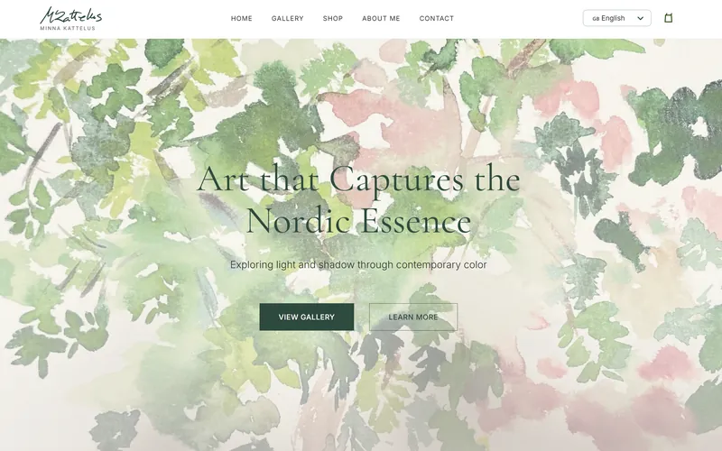
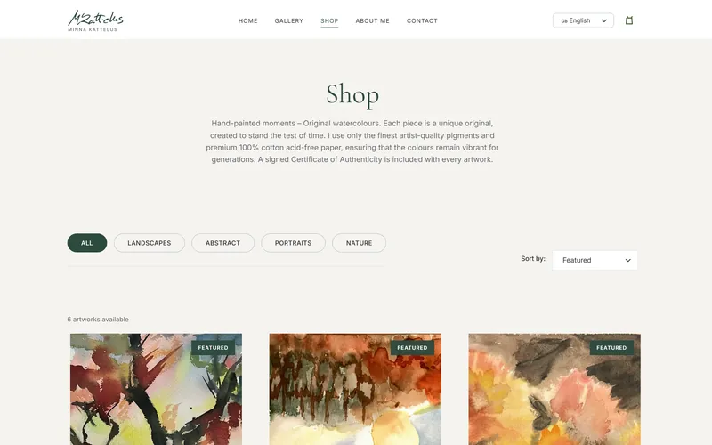
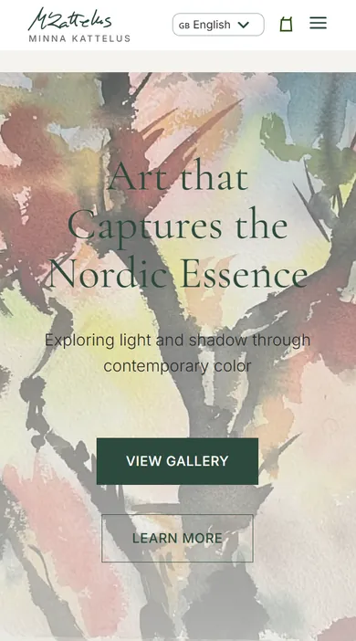
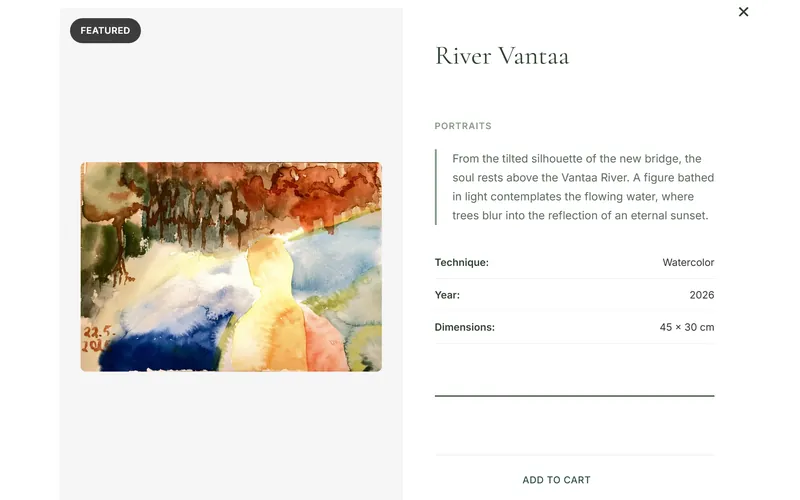

Verkkokauppa ja portfolio suomalaiselle taidemaalarille Minna Kattelukselle
Galleria ja verkkokauppa, jossa maalaukset ovat etusijalla ja tekniikka jää huomaamattomaksi. Kuvat latautuvat nopeasti ja säilyttävät todelliset värinsä, taiteilija julkaisee ja myy uusia teoksia itse ja seuraa tilauksiaan omalta hallintapaneeliltaan, ja keräilijät ostavat rauhallisen, henkilökohtaisen kassan kautta.
| Kuvat | Nopeat ladata, värit uskollisia alkuperäiselle |
|---|---|
| Teokset & tilaukset | Taiteilija hallinnoi itse, oma myyntinäkymä |
| Ostaminen | Ostoskori ja kassa keräilijöille suunniteltu |
| Kielet | Viisi, mukaan lukien suomi, ruotsi ja englanti |
| Suojaus | Lomakkeet, kirjautuminen ja kassa suojattu boteilta ja väärinkäytöltä |



